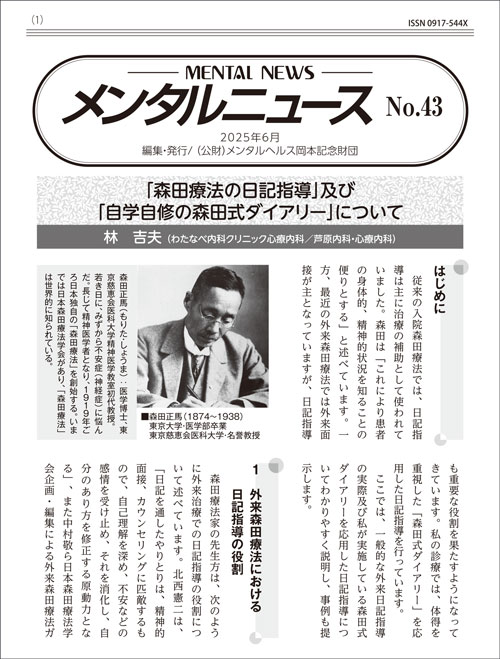

No.44（2026年）
不登校・引きこもりの家族療法‐家族の間の悪循環を扱う
北西 憲二（森田療法研究所／北西クリニック）
はじめに

近年、引きこもり状態にある人は増加し、現在、その数は全国で約146万人にのぼると推計されている。引きこもりは、もはや個人の問題にとどまらず、その中で生じる家族の不安、混乱、葛藤を含めて、現代社会における重要な問題となっている。
伝統的な森田療法は、家族を治療の対象としてこなかった。では、外来森田療法では家族葛藤にどのように対応してきたのだろうか。
今まで森田療法の理解に基づいた家族への接近を試みた例がないわけではない。親と子どもの悪循環に注目した玉井ら（1991）、村田（1992）の論文がある。つまり親と子の相互作用や親の子に対する「こうでないといけない」という考え方が、子どもの神経症性障害の形成に重要な役割を果たしているという指摘である。
引きこもり、不登校などの子どもの問題に対して、個人のみを対象とした治療だけでは、精神療法が成り立ちにくい時代となった。現代日本の家族の絆は、以前に比べてゆるやかとなり、その分脆弱となった。ある家族の一員（当事者Ａ）が不安、抑うつ、不登校、引きこもりなどの問題行動を引き起こすと必然的に家族は巻き込まれる。そして家族の不安や混乱が、その問題行動に拍車をかける。そしてほとんどの場合は家族がよかれと思ってやったことが、逆に当事者の不安を増大し、その問題行動をさらに助長する。それがまた家族の混乱に拍車をかけるという悪循環である。
Ⅰ．森田療法における家族介入について

外来森田療法を行っていくうちに、対象によっては、当事者と家族との関係に注目する必要に迫られ、夫婦や家族単位で治療するようになった。あるいは、問題となっている当事者が治療の場に現れない場合には、まず家族を対象として治療を進めることもまれではない。家族の間で起こっている悪循環の把握から、治療はスタートする。
また治療的介入によって家族との関係が変わることにより、当事者自身が変化することもしばしば経験した。このようなことから、外来森田療法を行う場合に家族の問題はきわめて重要であると考えるようになり、森田療法の理論を基盤に、家族への介入を行うようになった。それが、森田療法的家族療法（親子療法／夫婦療法）である。このような介入が現代の児童、思春期、青年期の若者たちの挫折、問題行動、あるいは中年期の夫婦の問題に対してきわめて有効であることが分かってきた（北西、2001、2012）。
Ⅱ．とらわれと家族間の相互作用
とらわれの心理とは、「不安になった自己が自己自身を観察し、意識し、それを承認できないでもだえているような内向的、非行動的なありかた」（新福、1959）と描写される。
これを不登校に陥った子どもと母親との関係に置き換えてみよう。
「不安になった母親が不登校に陥った（引きこもった）子どもを観察し、意識し、それを承認できないでもだえているようなありかた」としてこの関係を理解できる。これが家族間のとらわれの心理である。
さらに具体的に子どもあるいは当事者（Ａ）と家族成員（Ｂ）の関係を見てみよう。家族成員（Ｂ）が当事者（Ａ）からある好ましくない刺激を受けたとする。それは不登校や、引きこもりであったりする。家族成員（Ｂ）は当然それを意識し、注意が当事者（Ａ）に引きつけられる。通常これは、一時的なもので終わる。
しかし家族成員（Ｂ）が当事者（Ａ）の言動、行動パターンが家族の考え方、価値観などにそぐわない、そうあってはならないと考えたらどうであろうか。あるいは家族成員（Ｂ）の不安を強く刺激したらどうであろうか。
特に思春期や青年期のこのような問題行動は、今まで平穏に見えた家族の問題点をあからさまに、それがまた家族成員（Ｂ）（多くは母親）の当事者（Ａ）への対応を混乱させる。そして家族成員（Ｂ）は当事者（Ａ）の問題行動を否定し、変えさせようとする。家族成員（Ｂ）の当事者（Ａ）への圧力、つまりコントロール欲求が強まる。それが家族の「べき」思考という当事者（Ａ）に対する縛りである。
そして、この対人関係で起こってくる悪循環の特徴として、以下のことが挙げられる。（図）

①当事者（Ａ）とある家族成員（Ｂ）、あるいは家族全体の関係が周囲に対して閉じられていること。
②当事者（Ａ）も家族成員（Ｂ）も（少なくとも一方は）相手に依存と攻撃、罪の意識、愛と憎しみなどの複雑な感情をもっており、それで悩んでいること。
③その感情のため、相手に対する注意が強まり、いわば相手しか目に入らないという視野狭窄の状態になること。
④そこに家族成員（Ｂ）の強迫的なコントロール欲求（相手を自分の思い通りに支配したい、何とかしたい、という欲求）が認められること。
⑤この悪循環がひどくなると、支配と被支配、無視と過干渉など極端な行動が、家族成員（Ｂ）と当事者（Ａ）の間に生じ、暴力、引きこもりなどを引き起こすこと。
⑥ひとたびこの関係に陥ると、当事者（Ａ）と家族成員（Ｂ）がたがいにそれを賦活する過程によってこの悪循環が持続し、自分たちの力ではなかなかそこから抜けられないこと。
こうした発想から、家族への介入が行われる（北西、2001、2012）。
Ⅲ．事例
事例１ 誤診された少年とその両親
不登校の少年（小学５年生）の両親が紹介されて受診した。半年ほど前から、子どもが学校に行かなくなった。両親は一緒に自営業を営んでおり、父親は子どもを甘やかす方で、母親は教育熱心で、厳しい面もある。両親とも心配になり、いくつかの大きな病院の精神科を訪れ、全般性発達障害の疑いあるいは落ち着きのなさからＡＤＨＤ（注意欠如・多動症）などといわれ、薬物療法などを勧められていた。
両親は薬物療法を行うことに不安を持ち、また診断も納得できないため、いわばセカンドオピニオンを求める形で私の所に来た。子どもはもう診察に行くのはいやだ、と来院しなかった。
それについて無理に連れてくることはない、と伝えた後、今までの経過について聞いてみた。幼児期からの心身の発達も特に偏ったこともなく、学校に行かない時も、夕方になると友達とよく遊んでいたという。成績は中程度で母親が勉強についてあれこれ厳しく言い、４年生の頃から学習塾にも通わせていった。学校に行かない時にも、塾には友達もいるらしく、いやがらずに通っていた。
不登校になってから、両親は、心配して、あれこれ原因を尋ねるが、はっきりしない。学校でいやなことがあり、どうやらいじめのようだが、深刻ではないらしい。学校の先生も授業中に落ち着きはなく、悪ふざけをするが、それ以外は特に問題はないという。

両親、特に母親は、学校に行かせようと朝に起こして一緒に学校に行こうとするが、子どもは反抗的になり、そこで修羅場になるという。
母親の様子を聞くと、子どもに対するとらわれの心理そのものであった。母親の状態を確認すると、子どもが不登校になってから、不安、落ち込みがひどく、朝の修羅場の時は、「学校に行かないなら、お母さんは死ぬから･･」といって、自分で自分の首を絞めて、慌てて父親が止めに入ったこともあるという。また学校に行かないならば、夕方の友達と遊ぶこともダメ、と禁止したという。それが子どもの引きこもりを助長し、また親の不安、苦悩を強めていった。
このような家族の相互作用について、今までの精神科では聞かれたこともなく、ただ子どもの状態を聞いた後に、心理テストなどをして、診断を告げられ、薬物療法を勧められたという。薬物療法への不安を訴えると、入院での精密検査を勧められると、ますます不安になり、母親は、絶望的な気持ちに襲われたとのこと。
子どもの今までの心身の発達、そして親と子どもの相互作用から、むしろそこでの悪循環が問題だと理解し、その見解を告げた。
まず両親の心理を、とらわれから説明した。「子どもの一挙手一投足に注意が引きつけられ、意識され、それによって親の気持ちがゆれてしまい、そのためにさらに子どもに注意が引きつけられる状態です。」と伝えると、両親、特に母親はその通り、と納得したようだった。そして「お子さんの様子から、特にＡＤＨＤと決めつける必要もなく、薬物療法も必要ないでしょう。それよりもこの悪循環を絶つ練習をしてください」と両親に告げた。その具体的な行動処方として次のように伝えた。
〈行動処方〉
①子どもに学校は行きたくなったら行くように伝えること
②朝に学校に行く、行かないという綱引きを止めること、朝起こし、あとは子どもの気持ちに任すこと
③夕方の友人との遊びは、大いに勧め、自由に遊ばせること
④塾には今まで通り通わせること
⑤両親は、自営を始めた頃の初心に返って、仕事に没頭していくこと

今までと違った視点から、問題の理解とその解決法を提示され、両親ははっとして、『目から鱗という経験をした』と後の面接で述べた。母親の不安も大分解消され、びっくりもしたが、私の保証で安心もしたようだった。
その後に2～3回の面接は、前述の行動処方の確認をしながら、「両親が子どもの欠点探しでなく、良い面を見ていきましょう。今までのような悪循環から子どもの問題行動が引き出され、それが誤って診断されてしまうこともあるのです。」と伝えていった。
実際2ヶ月後には、子どもは段々本来の活発さを取り戻し、自分でなんとか学校の問題についても処理したようで、ある朝、自分で起きて、学校に行きだしたという。
そこで面接を終了とした。
事例２ 引きこもった娘ととらわれた母親
不登校の娘のことで、両親が来院した。娘は１６歳（高校２年生）で一人っ子 。相談にきた両親は５０代前半で、父親はサラリーマン、母親はパートで勤めに出ている。
娘は小さい頃から活発だったが、恥ずかしがり屋。父親はこの子に甘くて、何も言えない。母親は娘に学校の成績や生活態度については厳しく言ってきたが、高校１年生の３学期（３月頃）から、親に対して反抗的になり、生活態度が乱れてきた。母親は裏切られたという思いで厳しく注意したが（母親のかくあるべし思考）、娘は反抗し、家のなかは、かなり緊迫し、とげとげしい雰囲気になった。不登校は高校２年生の４月から始まった。親が学校に行かせようとしても、反抗して部屋に引きこもってしまう。

母親は、娘の動きが気になって何も手につかない。部屋のちょっとした物音も、どうなっているのだろうと気になり（とらわれの心理）、本当に地獄のようだという。娘のことが気になるし、一人で家に置いておくのも不安で、勤めていたパートの仕事や、楽しみにしていた友人とのつき合いも止めてしまった。母親、そして父親は現実の娘を受け入れられず、何とかしようと働きかけるのだが、事態はますます悪化した。母親はそのような娘に激しい憎しみを感じる反面、こんなふうにしたのは育て方が悪かったのではないかと自分を責めている。母親のそのような感情がますます娘に注意を集中させ、そのために娘の些細な言動に左右され、結果としてまた母親の注意を強めるという悪循環である（母と子のとらわれ）。
さて介入の詳細は略すが、3ヶ月ほどで治療は終結し、娘さんは自らの意思で転校し、そこに通い出した。
Ⅳ．介入の要諦
このように家族間で起こっている悪循環を児童期から思春期、青年期の問題から捉え直すことは臨床上きわめて重要なことである。この問題行動だけに焦点を当てると、誤診あるいは問題行動の悪化を招き、それが問題行動を固着させることにつながるからである。
これは、不安症（社会不安症など）、強迫症、抑うつ症などにより、引きこもってしまう子どもたちや思春期の若者たちの家族への有効な介入方法である。そして親と子どもの悪循環がゆるんでから、当事者（Ａ）が受診し、それから必要に応じて治療を始めることも少なくない。そこでの介入の要諦は次のようなものである。
①悪循環（とらわれ）に気づくこと
親Ｂに「子どもさんの言うこと為すことが気になり、そこに注意が向けば向くほど、さらに子どもの言動に敏感になっていき、両親はそのことしか考えられない状態になっている。何とかしたい気持ちはわかるが、子どもを思いどおりにしようとすればするほど、返って逆の行動を引き起こします」と伝え、悪循環への気づきを促していった。2事例の親Ｂもその言葉にはっとしたようで、「まったくそのとおりだ」と言う。

②悪循環（とらわれ）を解く方策を示す
（１）親Ｂのコントロールを断念すること
「まず子どもに学校に行け、治療に行けとは言わないこと」と告げた。そして、「子どもにはここにくる必要はないこと、ただし、自分たちは不安でここに相談にきていることを率直に告げること」を勧めた。これは親の子どもへのコントロールを断念させる介入法である。それが（２）につながって行く。
（２）自らの不安に気づくこと、それを引き受けること
面接では、親のさまざまな苦悩に満ちた感情と引き起こしている子どもの問題行動も、とりあえず棚上げし、少しずつ引き受けられるように働きかける（受容の促進）。
（３）自分の生活に取り組むこと
それと共に親Ｂには、注意を子どもＡ以外に向けて、自分の生活そのものに取り組むことを助言した（行動の変容）。
③自らの生き方、自己のあり方を話し合う
親自身Ｂが自分の不安と向き合い、自分のあり方、とくに子どもとの接し方やそのコントロール欲求について、理解を深めていけるように援助した。子どもが今までのように親の言うことを聞くよい子ではなく、親に反抗し、親から離れていく時期かもしれない、それは成長に欠かせないこと、と自覚を深めるように助言した。親の「こうあるべき」という思考のパターンが徐々に修正され、不登校（引きこもり）をめぐる話から自分自身の生き方に、少しずつテーマが変わっていった。